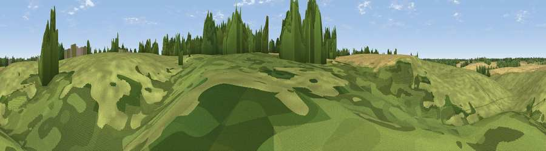

Trenchern Hills
#45912 in England · top 86% of its area beats it · near Dane EndWhere it is
The exact computed spot (TL 35160 21663). Click the marker for map links.
The view, rendered

A 360° render of this exact spot computed from the terrain model, tree cover and land cover — summer colours, afternoon light, calibrated against photographs of famous viewpoints. Real trees, hedges and buildings will differ in detail.
The panorama
Grey silhouette: terrain skyline in each direction (720 bearings, Earth curvature and refraction included). Dashed green: skyline with trees (+15 m) and buildings (+8 m) as obstacles. Blue strip: how far the ground is visible on each bearing.
Where the view opens
Wedge length = distance to the farthest visible ground on that bearing (vegetation-aware). Rings at 10, 25 and 50 km.
What fills the view
74% grassland · 15% cropland · 10% woodland
Angular shares of the visible panorama (visual magnitude), not map area. Landscape diversity 0.32 (0–1 Shannon).
Key numbers
More beautiful places nearby
The staircase of upgrades: each row has a higher view potential than everything closer. Driving times are estimates from straight-line distance, calibrated against real road routing — check an actual route before setting out.
| Place | Direction | Drive | Score |
|---|---|---|---|
| King's Hill | NNW · 1 km | ~3 min | 20.4 |
| Knights Hill | NNE · 4 km | ~9 min | 21.7 |
| Wickham Hill | ENE · 4 km | ~10 min | 21.8 |
| Viewpoint near Thundridge | S · 6 km | ~12 min | 40.8 |
| Viewpoint near Baldock | NW · 15 km | ~27 min | 53.9 |
| Viewpoint near Royston | N · 19 km | ~32 min | 56.6 |
| Viewpoint near Hexton | WNW · 24 km | ~39 min | 65.4 |
| Viewpoint near Church End | W · 34 km | ~53 min | 65.8 |
51.87716, -0.03793 · source: osm peak · position refined by local search. Computed location — check access rights before visiting.